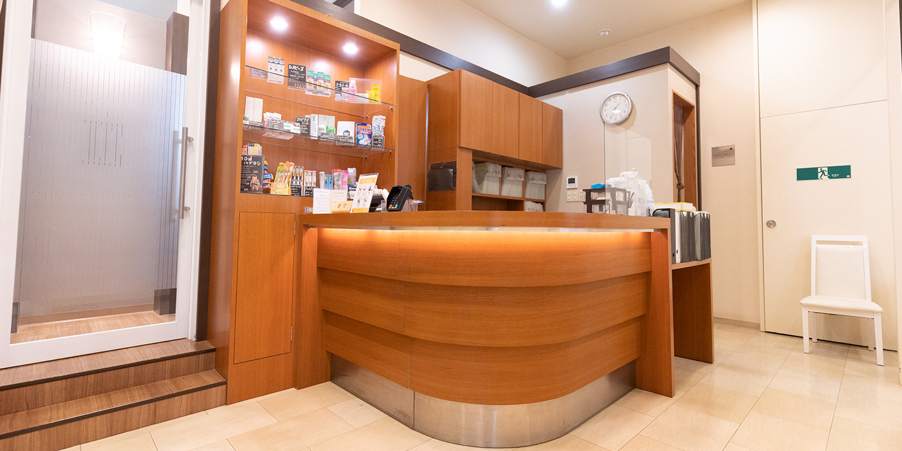

初めてお越しの方へFIRST

初めて当院へ来られる方のほとんどが、「痛い」「腫れた」「銀歯取れた」などが理由です。
そういった原因のほとんどが、詰まる所、ブラッシングケアの不備もしくは 独力での歯石除去の限界による虫歯の発生だと思います。 勿論、「痛い」「腫れた」を治療することを大前提とした治療を行います。それとともに、 「以前より改善した良好な歯周状態」となるような丁寧な治療を皆様にご提供いたします。
初診の流れ
ご来院・受付
問診票を書いていただくので電話によるご予約の10分前に受診お願い致します。
問診・カウンセリング
実際に患者様に手鏡を見て頂き虫歯になっていたり腫れているところを見てもらい、症状の把握や原因に関していくつか予測を立てます。これにより、患者様に対してより具体的に病状が伝わりやすくなります。
検査
主な検査としてレントゲン撮影、歯周検査を行っております。症状によっては、特に埋まっている親知らずや鼻に近い部位の痛みが強い患者様にはＣＴ撮影を行うことがあります。
治療計画の説明
実際に鏡で見てもらう、レントゲンを一緒に見てもらう以外に動画による治療の説明のツールを使ったり実際に作った銀歯や白い歯の模型を見てもらってヴィジュアライズしてイメージしてもらえるよう説明いたします。
治療
なによりも「診断」を第一優先にして治療を行ないます。
場合によっては治療期間が長期的になる場合もありますが、治療期間中も仮歯などを用いて見た目のきれいな状態、ちゃんと噛める状態を維持して治療を進めていきます。
メンテナンス・定期検診
治療が終わって「だいぶ良い歯周状態」になってから３～４ヶ月後の定期検診をおすすめしております。３～４ヶ月であれば、虫歯が新しくできたとしても比較的小さい状態の時に治療できますし、歯石も除去しやすいです。
まずはご相談ください
私達は患者様からお口の健康を任せていただけるように、頼りがいのある歯科医院を目指しています。お口のトラブルがございましたら、お気軽にご相談ください。